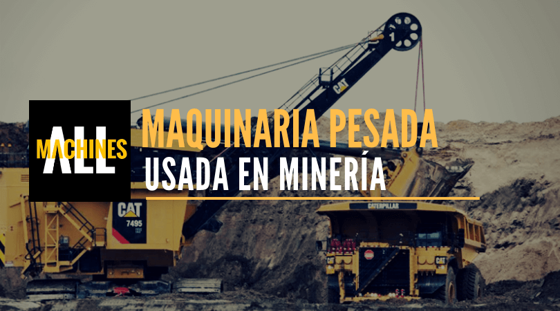

Maquinaria
A lo largo de la vida útil de una mina se emplean distintas maquinarias, cuya elección dependerá de las condiciones del entorno, las características del yacimiento y la geometría de la explotación, y de sus requerimientos específicos.A grandes rasgos la maquinaria usada en la minería se divide en tres; equipos de carguío, equipos de transporte y equipos de servicio mina. La maquinaria de carguío tiene como finalidad cargar el material recién tronado y depositarlo en equipos de transporte o directamente en piques de traspaso, en el caso de la minería subterránea.
Por su parte, el objetivo de las de transporte consiste en trasladar el material mineralizado y/o estéril desde el yacimiento hacia los posibles destinos, ya sea el chancado, stock de mineral o botaderos de estéril.